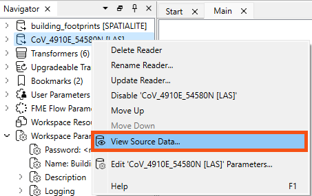
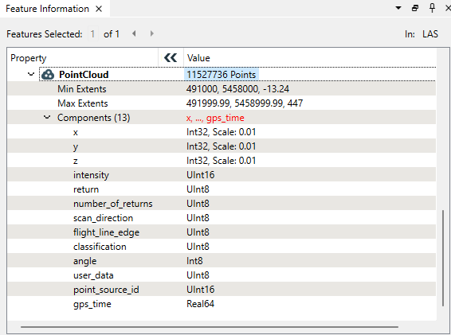

After completing this lesson, you’ll be able to:
Sven's colleague Amar is starting an FME project to convert 2D building footprints to 3D models by comparing them with a point cloud. He opens his workspace using FME Workbench (2025.0 or later). This workspace takes 2D building footprints and extrudes them to make 3D buildings. He also wants to compare the resulting extruded 3D buildings to a point cloud to see if the extrusion is roughly correct compared to what is observed in the point cloud.
Amar has not yet inspected the point cloud dataset and is curious about what units of distance are used in it (feet or meters) and what software was used to generate it—TopoDOT had been used previously, but Terrascan was used for the most recent point clouds.
The point cloud format is ASPRS Lidar Data Exchange Format (LAS). The reader is listed in the Navigator window as [LAS]. Amar right-clicks on the LAS reader and selects View Source Data… to inspect the original dataset.

The Table view in Visual Preview shows no attributes, which indicates that no exposed attributes are present in the dataset. Exposed attributes appear in the Table view and will be written out if connected to a writer feature type and defined on its schema.

However, that does not mean there are no attributes at all. The features will have format attributes, which are not displayed in the Table view by default. It could also contain other unexposed attributes in some cases.
Check out the Create and Modify Attributes course for a more in-depth overview of attributes in FME.
A quick check of the ASPRS LiDAR Data Exchange Format (LAS) "Quick Facts" in the documentation confirms that this format does not support user-defined, i.e. exposed, attributes. But Amar knows that there are more attributes than just user-defined attributes.
Amar selects the single feature in Table View and looks in the Feature Information window.
The Feature Information window displays everything FME knows about the feature selected in the Table or Graphics View. Here, you can find all the user-defined attributes, format attributes, coordinate system information, and geometry information. It's open by default, but you can also toggle it using this highlighted button on the left of the Visual Preview window:

Amar notes the top-right of Feature Information reports the feature type or port name. Below that are Attributes, both Exposed (shown in Table view and written out to the destination table) and Unexposed (used by FME but not shown in Table View or written to the destination table).
Because this feature is spatial, the Geometry section below Attributes contains information on:
The coordinate system catches Amar's eye because it’s a link. Clicking on UTM83-10 opens the Properties dialog for the coordinate system. Here, Amar can see that the units for UTM83-10 are meters. This is important for Amar to know, especially if he plans to do any calculations, such as measuring a distance or an area. By default, FME will use the coordinate system’s unit as measurement, and the result would look odd if those units were in degrees!

Using the Feature Information window and Coordinate Systems Properties dialog is one of the fastest ways to determine what units you are working with when calculating areas or distances.
Amar closes the Coordinate System Properties dialog and checks the items under the Unexposed Attributes header in the Feature Information window. This section reports the attributes associated with the feature, including user attributes and format attributes (for example, fme_type).
Amar can see that TerraScan, not TeraDOT, generated this dataset, so this is the more recent point cloud dataset. Amar can also see the creation date of this LAS file (las_file_creation_date (string): 20130425) and the LAS version (las_version (string): 1.2).
There is even more information available under FME Attributes, including the location of the dataset (fme_dataset (string): https://s3.amazonaws.com/FMEData/FMEData/Data/PointClouds/CoV_4910E_54580N.laz).
Amar then checks the Geometry section in the lower part of the Feature Information window. This section reports the feature's geometry. It includes the geometry type and a list of the coordinates that make up the feature. Here, Amar can see the extent of the data and the number of points in the point cloud.

While the Table view typically only shows exposed user-defined attributes, the Feature Information window displays FME-generated format and list attributes.
You can expose any user-defined attributes or fme_type attributes visible in Feature Information for display in the table, allowing you to use them in your workspace. For more information, see the Create and Modify Attributes course.
Make sure you have followed along with Amar’s steps.